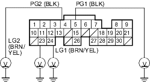
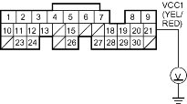

- Measure voltage between body ground and ECM/PCM connector terminals A4, A5, A23 and A24 individually.
ECM/PCM CONNECTOR A (31P)

Wire side of female terminals
Is there less than 1.0 V?
YES - Repair open in the wire (s) between that had more than 1.0 V between G101 and the ECM/PCM (A4, A5, A23, A24). 
NO - Go to step 48.
- Measure voltage between body ground and ECM/PCM connector terminal A21.
ECM/PCM CONNECTOR A (31P)

Wire side of female terminals
Is there about 5 V?
YES - Go to step 56.
NO - Go to step 49.
- Turn the ignition switch OFF.
- Disconnect the manifold absolute pressure (MAP) sensor 3P connector.
- Turn the ignition switch ON (II).
- Measure voltage between body ground and ECM/PCM connector terminal A21.
ECM/PCM CONNECTOR A (31P)

Wire side of female terminals
Is there about 5 V?
YES - Replace the MAP sensor.
NO - Go to step 53.
- Turn the ignition switch OFF.
- Disconnect ECM/PCM connector A (31P).